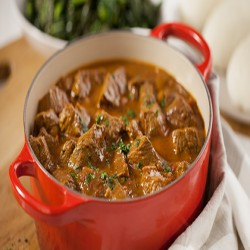

Kenyan Beef Stew

This kenyan beef stew uses tender grass fed beef and is so delicious and easy to make.
Recipe
Ingredients
- 500g beef
- 2 tbsp olive oil
- 2 tbsp fresh garlic cloves, minced
- 1 cup yellow or red onion, diced
- 2 tsp. curry powder mix (optional)
- 2 Royco Beef Cubes
- 1 cup diced/crushed tomatoes
- 1 cup water
- Salt and pepper to taste
- 3 tbsp. fresh coriander, finely chopped salt
Method
- Heat a large pan on medium heat.
- Add olive oil and onions then cook until soft.
- Next add garlic and spices, stirring constantly to prevent any sticking.
- Put in the beef and crumbled Royco Beef Cubes Beef Cubes cook until fragrant, then add tomatoes and water.
- Bring to a slight boil, turn heat down to low setting and simmer for about 30 minutes.
- Remove from heat and set aside until ready to serve.